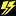

ギガンテス
ギガンテスはPSNOVAを象徴する巨大エネミーで、種類ごとに攻撃方法や弱点が大きく異なる。多くは装甲の内側に弱点を持ち、パイルで杭を打ち込んでチェインを伸ばすなど、通常エネミーとは異なる攻略が重要になる。このページでは弱点属性、捕獲可否、ギガンテスブラスト、SH以降の出現クエストを一覧で確認できる。
大型ギガンテスデータ
| 種別 | 名前 | 弱点属性 | 捕獲 | ギガンテスブラスト | 備考 | 難易度SH以降での出現クエスト |
|---|---|---|---|---|---|---|
| アグリオス種 | アグリオス | 風 | ◯ | アグリカノーネ 広範囲主砲攻撃 | P型はアグリオス扱い | 難：鉱脈発見任務 難：大尖塔資材回収任務 極：押し寄せるギガンテス |
| グレイオス | 氷 | ◯ | グレイホルン 広範囲放電攻撃 | 「超：猛攻のグレイオス」、「極：押し寄せるギガンテス」ではS型が出現する。(モーション速度強化型) | 難：グレイオス攻略任務 超：猛攻のグレイオス 極：押し寄せるギガンテス | |
| アルテイオス | 光 | ◯ | アルトカノーネ 広範囲主砲攻撃 | 「超：黒炎のアルテイオス」での弱点属性は 氷 「極：侵食する虚の骸」ではU型が出現する(状態異常特化型) | 難：★ラスト・デート 難：アルテイオス決戦 超：デス・デート 超：黒炎のアルテイオス 極：侵食する虚の骸 | |
| ガラティオン種 | ガラティオン | 闇 | ◯ | ガラテエーレ 蘇生 HP・状態異常回復 シフタ・デバンド | 難：鋼の荒野連続撃破任務 超：光と風の支配者 | |
| ギガティオン | 炎 | ◯ | ギガシュトルム チェーンソーでの切り裂き攻撃 | 「果たすべき使命」に出現 | 超：氷塊のギガティオン | |
| グラヴディオン | 風 | ◯ | グラヴシュトルム チェーンソーでの切り裂き攻撃 | 「極：漆黒の鉄馬と光線獣」ではU型が出現する(状態異常特化型) | 難：★ラスト・デート 難：グラヴディオン決戦 超：デス・デート 極：漆黒の鉄馬と光線獣 | |
| エウリュード種 | エウリュード | 雷  | ◯ | エウルスタンプ 衝撃波なぎ払い攻撃 | 「超：氷海のエウリュード」での弱点属性は 炎 | 難：鋼の荒野連続撃破任務 難：エウリュード攻略任務 超：光と風の支配者 超：氷海のエウリュード |
| ヴィヴリュード | 光 | ◯ | ヴィヴシュラック 多弾頭ミサイル全方位攻撃 | 「超：城壁のヴィヴリュード」ではS型が出現する(モーション速度強化型) 「極：弾雨下の回収作戦」ではW型が出現する(氷＋闇属性強化型) | 難：★ラスト・デート 難：ヴィヴリュード決戦 超：デス・デート 超：城壁のヴィヴリュード | |
| アルキュオネ種 | アルキュオネ | 氷 | ◯ | アルキュインフェアノ 特大火炎弾 | 難：アルキュオネ攻略任務 難：大尖塔資材回収任務 超：獄炎のアルキュオネ | |
| デェフキュオネ | 闇 | ◯ | デェフヴォルカン 煙幕弾：ブラインド付与 | 「極：棘と大火球の輪舞曲」ではW型が出現する(炎＋光属性強化型) | 難：★ラスト・デート 難：デェフキュオネ決戦 超：デス・デート 極：棘と大火球の輪舞曲 | |
| ギュゲンテ種 | ギュゲンテ | 炎 | × | - | 難：ギュゲンテ撃破任務 | |
| リベルゲンテ | 雷 | × | - | 難：リベルゲンテ決戦 | ||
| レイヴガイスト種 | レイブヒュフテ (第一段階) | 光 | × | - | 難：レイヴガイスト決戦 | |
| レイヴガイスト (第二段階) | 光 | × | - | 難：レイヴガイスト決戦 | ||
| ネメスフース (第一段階) | 雷 | × | - | HP減少後、風属性に弱点が変化 | 極：魂の解放 | |
| ネメスヒュフテ (第二段階) | 氷 | × | - | HP減少後、炎属性に弱点が変化 | 極：魂の解放 | |
| ネメスガイスト (第三段階) | 闇 | × | - | HP減少後、光属性に弱点が変化 | 極：魂の解放 |
小型ギガンテスデータ
| 種別 | 名前 | 弱点属性 | 備考 | 難易度SH以降での出現クエスト |
|---|---|---|---|---|
| トアス種 | ディートアス | 氷 | 難：グラン水源哨戒任務 難：グラン水源殲滅任務 超：尖塔に潜む光線獣 | |
| テュルトアス | 炎 | 難：古代都市殲滅任務 超：尖塔に潜む光線獣 極：棘と大火球の輪舞曲 極：伏す猛銃と天舞う砲凰 | ||
| マグネトアス | 無し | 難：★ラスト・デート 超：尖塔に潜む光線獣 超：ウィルアフォルの巣 | ||
| トアス・ヒュブオン | 無し | トアス種のレアエネミー | ノイヴァトアス以外の種の出現場所に準ずる | |
| ノイヴァトアス | 風 | 超：デス・デート 超：城塞のヴィヴリュード 超：尖塔に潜む光線獣 極：漆黒の鉄馬と光線獣 | ||
| ゴルドス種 | ゴルドス | 雷 | 難：鉱脈発見任務 難：グラン水源哨戒任務 | |
| オルゴルドス | 雷 | 難：ヴィヴィリュード決戦 難：ノヴァ内部哨戒任務 | ||
| ディゴルドス | 雷 | 難：★ラスト・デート 難：大尖塔殲滅任務 | ||
| ゴルドス・ビガオ | 無し | ゴルドス種のレアエネミー | ヴァリゴルドス以外の種の出現場所に準ずる | |
| ヴァリゴルドス | 無し | 超：棘の嵐 超：デス・デート 極：棘と大火球の輪舞曲 | ||
| アフォル種 | ファンアフォル | 氷 | 「超：昏闇のファンアフォル」での弱点属性は 光 | 超：昏闇のファンアフォル |
| ウィルアフォル | 炎 | 超：ウィルアフォルの巣 極：伏す猛銃と天舞う砲凰 |